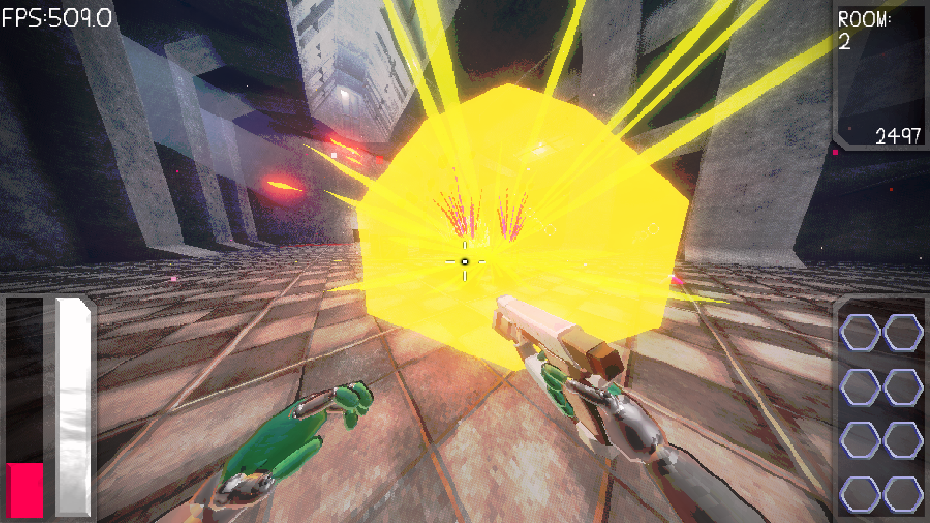
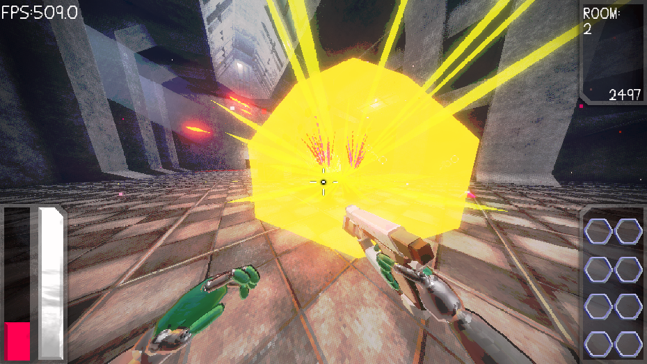
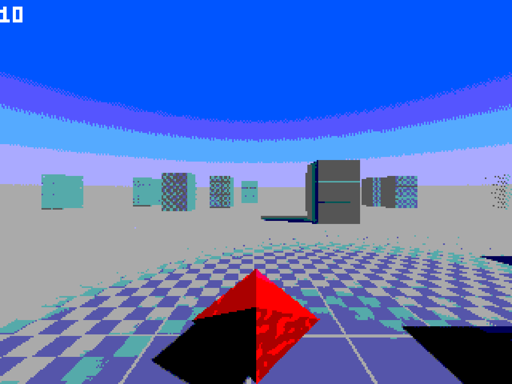
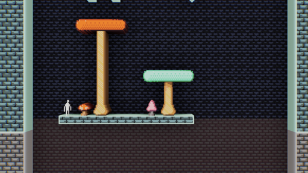

Projects!
Cult of Perdition:

Cult of Perdition is a Retro First Person Shooter, with the goal of growth and experimentation.
Experiment with builds/upgrades and grow your power to work your way through the cultist base.
It is being made in the Godot Game Engine and is my first project inside this engine as all my other projects are in unreal 4.
I have been posting development logs about my game on youtube so if you would like to see the making:
Cherl!eAnd if you would play Cult of Perdition or even just talk to me and other people, I have a discord server:
Discord 


PILLARS:

PILLARS is a game i made in secret for april fools
I told everyone i was making a game about fish called weeble worp fleep floorp but lmao no
PILLARS is a simple see how long you can last game where you drive around pillars in a Prism
How long can you last? (my high score is 40)
Itch Godot 4 First Person Template:
Cherlie's First Person Controller Or CFPC for short
CFPC is made for Godot 4.2x
This controller is has your basic needs but along with features such as
Movement Mechanics
Movement mechanics like Crouching Sliding and fun combos like Slide hopping and Crouch hopping
True Stair collision
Tired of adding Invisible ramps to your stair collision well no need, this controller works with proper stair collision and max stair height is adjustable
Quick and easy adjustment
Adjust all of these settings quickly by press on the player node and adjusting values on the properties panel. The code is annotated so hopefully it should be easy to understand even for people just starting out
History of my movement controller. So the first tutorial i ever followed in Godot was how to make a First Person Controller. It was a video by a dev named LUKKY and after ages i added my own things to the controller and this template is a cleaned up version of my version of lukkies controller
If you would like to download the project files:
ItchJUST JUMP!:
JUST JUMP! Made in the unreal 4 enigne. Is a 2D parkour game all about having the worst experience ever.
This game was made in 3 days and i even posted a video of it to my Youtube.
If you would like to play the game, the download is on my itch padge:
Itch DODGE:
DODGE again made in the unreal 4 enigne.
DODGE is all about what the title suggests you do. You drive around a planet in a small car while dodging small mines placed by a ufo
If you would also like to play the game, the download is on my itch padge:
Itch